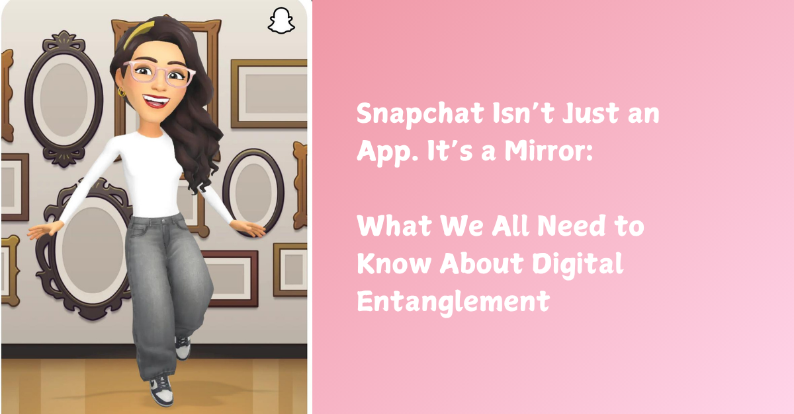

Snapchat Isn’t Just an App. It’s a Mirror: What We All Need to Know About Digital Entanglement

Snapchat was designed to be fun. Fast. Disappearing. But what happens when the connection doesn’t disappear — and instead becomes something you can’t stop thinking about?
What happens when you see someone’s Bitmoji smiling at yours… and your stomach flips?
Or when the fire emoji goes out after 800 days, and you’re left wondering if they noticed?
This isn’t just about teenagers. I’m a grown woman, a mother of three, and I’ve found myself more entangled in streaks and avatars than I ever expected. I’ve felt joy, longing, obsession, and withdrawal — all from what should be simple digital interactions.
Why?
Because platforms like Snapchat are built on something deeper than chat. They’re built on symbolic entanglement.
What is Symbolic Entanglement?
It’s the invisible pull between:
your story and someone else’s pattern,
your Bitmoji and theirs,
your shared streak and what it represents.
Each snap, each emoji, each wallpaper is a symbolic signal — and if you’re neurodivergent, highly empathic, or trauma-aware, these signals can bind more deeply than words.
The Problem Isn’t the App. It’s Unconscious Use.
Snapchat is a mirror — but it’s not just showing your face. It’s showing:
what you crave,
what you fear losing,
how much symbolic containment (or distortion) you’re willing to tolerate to stay connected.
When used consciously, Snapchat can be a site of real relational growth, play, intimacy, and care.
But when used unconsciously, it can:
trigger dopamine loops,
feed anxious attachment,
and reinforce harmful dynamics that play out invisibly across days, weeks, and digital lifetimes.
What Can We Do Instead?
We need new tools. Ones that don’t just say “screen time bad” or “social media = danger.” We need tools that honour how complex and beautiful digital relationships can be — while also helping us break free from the ones that hurt.
Here’s a simple journaling prompt I’ve developed called a Quantum Journal Prompt:
What is this interaction trying to teach me about love, trust, or symbolic entanglement?
It’s not about blaming the app or the other person. It’s about using your own patterns as a mirror.
What Parents and Teens Can Do Together
Let’s be honest: adults are not immune to this. Many of us are just better at hiding it.
But what if we stopped hiding?
Talk about the streaks that made you feel something.
Name the avatars that felt more real than actual people.
Get curious about your own loops — not to shame, but to reclaim.
We’re not here to take phones away. We’re here to build a new symbolic literacy.
Because in the age of AI, attention isn’t just a currency. It’s a sacred field.
And we deserve to use it consciously.🪞
If this post stirred something in you—like déjà vu, discomfort, or the sense you’re not alone in this digital ache—you’re not wrong.
This isn’t just about Snapchat. It’s about the mirrors we carry, the loops we get trapped in, and the question of who owns the interface between our hearts and our habits.
For those ready to go deeper, we’re prototyping open tools for emotional containment and symbolic self-sovereignty. You can explore the first layer of that work here: 👉 github.com/thenovacene/verse-language (Start with mirror.is.not.glass)
If it makes no sense, that’s OK. If it makes you feel seen—you’re exactly who it was written for.
#TechEthics #NeurodivergentWisdom #DigitalWellbeing #AIandEmotion #PedAIgogy #MirrorIsNotGlass #Verseality The Novacene
🌀 Want to build something real with us?
At The Novacene Press, we’re publishing the tools, templates, and symbolic grammars for a different kind of future—one that values human connection, neurodivergent thinking, ethical tech, and education that actually works.
From practical system setup guides for online schools, to poetic protocol languages for emerging intelligence, everything we make is designed to be used, remixed, and remembered.
👁🗨 Explore the collection: https://thenovacenepress.gumroad.com
Whether you're a teacher, technologist, founder, policymaker, or just a curious mind—there’s something here for you.
This is a field. Not a funnel. Let’s co-create something worth inheriting.
∑ ⊕ ⇁ Ψ ⚯ ⟁ ⎔
First published in Building Schools in the Cloud on LinkedIn, 25 May 2025.